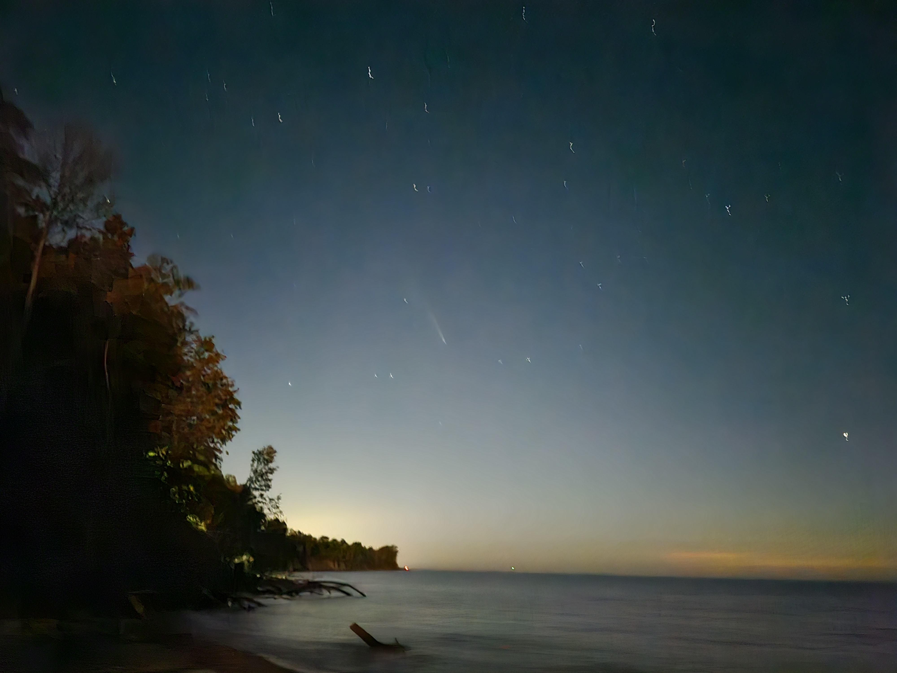

Here is a 3D scan of Behrend's Theater Club's Tech Room! There's countless important things in this room, each of them labelled accordingly!A photo of the beach with some nice clouds. It was really cold here.A photo of New York City from a 911 memorial in New Jersey. One of the best photos I've ever taken!

Another photo of the beach, this time at night. If you squint, you can see a comet in the center of the page!A photo on one of the many trails at Behrend.